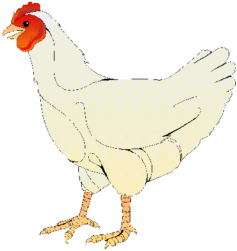

A házityúk (Gallus gallus domesticus)
Háziasított madárfaj, mely a háztáji baromfik legelterjedtebb tagja, néha még magát a baromfi szót is használják a csirkék megnevezésére.
Mind húsát, mind tojásait előszeretettel fogyasztják az emberek. Számtalan fajtáját, változatát tenyésztik.